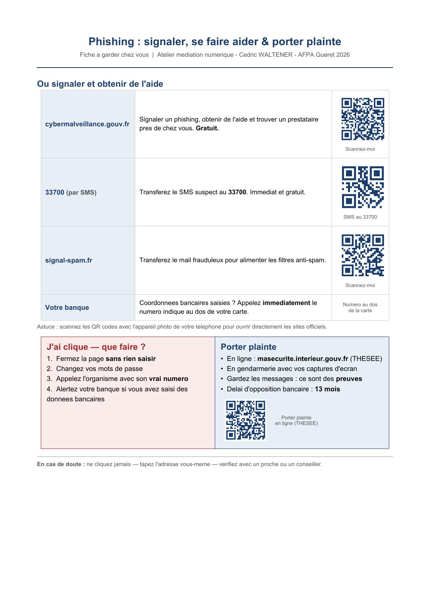

⏳ Vérification de votre niveau…

📄 Texte de la page (traduisible — les images ci-dessus restent en français)
Phishing : signaler, se faire aider & porter plainte Fiche a garder chez vous | Atelier mediation numerique - Cedric WALTENER - AFPA Gueret 2026
Ou signaler et obtenir de l'aide
Signaler un phishing, obtenir de l'aide et trouver un prestataire cybermalveillance.gouv.fr pres de chez vous. Gratuit.
Scannez-moi
33700 (par SMS) Transferez le SMS suspect au 33700. Immediat et gratuit.
SMS au 33700
signal-spam.fr Transferez le mail frauduleux pour alimenter les filtres anti-spam.
Scannez-moi
Coordonnees bancaires saisies ? Appelez immediatement le Numero au dos Votre banque de la carte numero indique au dos de votre carte.
Astuce : scannez les QR codes avec l'appareil photo de votre telephone pour ouvrir directement les sites officiels.
J'ai clique — que faire ? Porter plainte 1. Fermez la page sans rien saisir • En ligne : masecurite.interieur.gouv.fr (THESEE) 2. Changez vos mots de passe • En gendarmerie avec vos captures d'ecran 3. Appelez l'organisme avec son vrai numero • Gardez les messages : ce sont des preuves 4. Alertez votre banque si vous avez saisi des • Delai d'opposition bancaire : 13 mois donnees bancaires
Porter plainte en ligne (THESEE)
En cas de doute : ne cliquez jamais — tapez l'adresse vous-meme — verifiez avec un proche ou un conseiller.